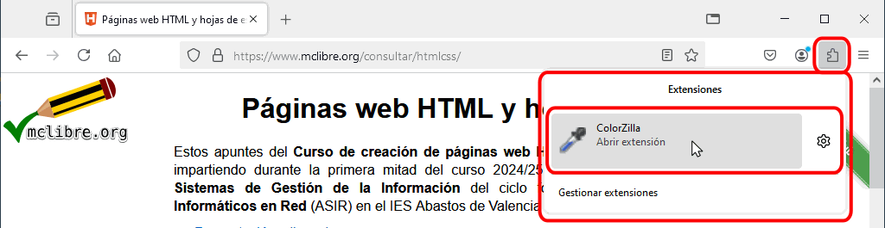
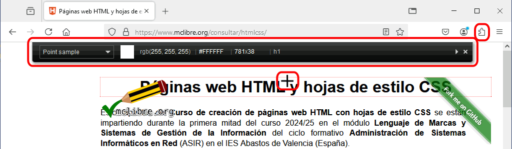
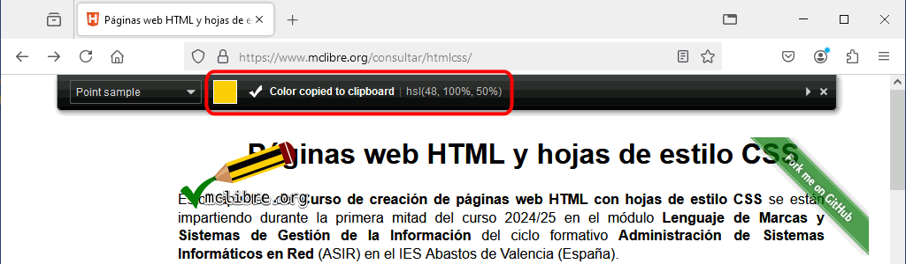
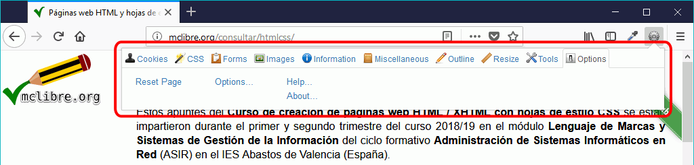

Extensión ColorZilla
ColorZilla es un selector de colores que permite obtener el código de color de los píxeles de la pantalla. ColorZilla está incluida en Firefox Add-ons.
Actualmente (septiembre de 2021), la versión más reciente de ColorZilla para Firefox es la versión 3.3, publicada el 7 de marzo de 2017. También está disponible para Chrome la versión 2.0, publicada el 24 de diciembre de 2016.
Notas:
- ColorZilla en Firefox tiene un problema importante y es que no permite copiar colores de una imagen si el navegador está abriendo únicamente la imagen (si la imagen está insertada en una página web, entonces sí que puede copiar un color de la imagen). ColorZilla en Chrome no tiene ese problema, aunque para ello se tiene que marcar la opción "Permitir acceso a URL de archivo" en el menú
- Colorzilla añade a las páginas el atributo cz-shortcut-listen="true" que da problemas al validar páginas abiertas en localhost con la extensión HTML Validator. El 21/10/2018 he enviado un mensaje al autor a través del formulario de su página web diciendo que podrían utilizar un atributo data-.
- Firefox incluye un selector de color más simple en las herramientas de desarrollador web.
ColorZilla se instala en el extremo derecho de la barra de navegación de Firefox y de Chrome:

Para elegir el formato del código de color:
- Haga clic en el icono de ColorZilla y en el menú que se abrirá, elija la opción Options:
- Se abrirá una nueva pestaña mostrando las opciones de ColorZilla. Despliegue el menú "Auto-copy color format", elija el formato del código de color deseado (en este curso se recomienda elegir el formato hsl) y haga clic en el botón Save. A continuación, puede cerrar la pestaña.
Para copiar un color de la pantalla:
- Haga clic en el icono de ColorZilla. Al mover el ratón a la página, el cursor se convierte en una cruz y se mostrará una ventana flotante:

- Sitúe el cursor sobre el píxel cuyo color se quiere averiguar. La barra flotante de ColorZilla muestra en todo momento el color y el código de color del píxel sobre el que se encuentra el cursor (en formato RGB).
- Haga clic en el píxel. El valor del color se mostrará durante unos segundos y después ColorZilla se cerrará. El valor del color estará copiado en el portapapeles de Windows.

- A continuación, ese valor se puede pegar en la hoja de estilo que estemos editando.
Extensión Html Validator
Html Validator añade a Firefox una pestaña en las herramientas de Desarrollador Web que permite validar páginas web con el validador del W3C. Html Validator está incluida en Firefox Add-ons.
Actualmente (septiembre de 2021), la versión más reciente de Html Validator para Firefox es la versión 0.9.9.5, publicada el 4 de agosto de 2021. También está disponible para Chrome.
HTML Validator inserta un icono en el extremo derecho de la barra de navegación de Firefox y de Chrome:
Pero este icono es un simple recordatorio de que Html Validator se encuentra en las herramientas de Desarrollador web.
Para eliminar el icono, haga clic derecho en él y elija la opción "Eliminar de la barra de herramientas". Esta acción no desinstala la extensión Html Validator.
Una vez instalado Html Validator, al abrir las herramientas de Desarrollador web, se mostrará una nueva pestaña Html Validator.
Haga clic en la pestaña para ver el resultado de la validación.
Validación con Html Validator
 Esta sección está en elaboración.
Esta sección está en elaboración.
Extensión Web Developer
Web Developer añade a Firefox una barra de herramientas con herramientas útiles para el desarrollo de páginas web. Web Developer está incluida en Firefox Add-ons.
Actualmente (septiembre de 2021), la versión más reciente de Web Developer para Firefox es la versión 2.0.5, publicada el 13 de enero de 2020. También está disponible para Chrome.
En cdlibre.org hay una sección dedicada a Desarrollo web > Otros, con información detallada sobre la última versión estable publicada.
Web Developer se instala en el extremo derecho de la barra de navegación de Firefox y de Chrome:
Al hacer clic en el icono de Web Developer, se despliega una ventana con todas las herramientas, organizadas en pestañas.

Al hacer clic en cada pestaña, se muestra las herramientas correspondientes. Haga clic en la herramienta que quiera aplicar.
Dependiendo de la herramienta, Web Developer puede mantener la pestaña actual o abrir una nueva pestaña. Por ejemplo, si se elige la herramienta CSS > Disable All Styles, la página se mostrará sin las propiedades de estilo. En el icono de la barra de herramientas se mostrará un número indicando el número de herramientas activas y en el menú de Web Developer se marcará la herramienta activa.
Para desactivar una herramienta, haga clic de nuevo en ella.
Validación con Web Developer
Web Developer permite la validación de varios tipos de documentos, con algunas limitaciones. Las herramientas disponibles se encuentran en la pestaña Tools del menú de Web Developer. Abra primero en Firefox la página que quiera validar y elija a continuación la herramienta correspondiente.
Las primeras opciones del menú permiten validar páginas web disponibles en Internet (http://....), mientras que las dos últimas permiten validar páginas web locales (que se abren en el navegador con la dirección file:///...).
El resultado de la validación se mostrará en una ventana aparte:
Por completar: Atajos de teclado + Crear atajos de teclado